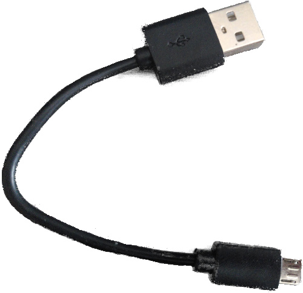

Hardware/knowledge requirements
The primary knowledge requirement to read this book is to know some Rust. It's hard for me to quantify some. Being familiar with the basics of generics and traits is quite helpful. You do need to know how to use closures. You also need to be familiar with the idioms of the current Rust edition.
Also, to follow this material you'll need:
-
A Micro:Bit v2 (MB2) board.
You can purchase this board from many suppliers, including Amazon and Ali Baba. You can get a list of suppliers directly from the BBC, the manufacturers of MB2.

There are several versions of the
V2board available. While the material here was written forV2.00, things should work fine with with anyV2board. -
A micro-B USB cable (nothing special — you probably have many of these). This is required to power the micro:bit board when not on battery, and to communicate with it. Make sure that the cable supports data transfer, as some cables only support charging devices.

NOTE Some micro:bit kits ship with such cables. USB cables used with other mobile devices should work, if they are micro-B and have the capability to transmit data.
The official
micro:bit Gokit provides both the USB cable and a nifty battery pack for powering the MB2 without USB.
FAQ: Wait, why do I need this specific hardware?
It makes my life and yours much easier.
The material is much, much more approachable if we don't have to worry about hardware differences. Trust me on this one.
FAQ: Can I follow this material with a different development board?
Maybe? It depends mainly on two things: your previous experience with microcontrollers and/or
whether a high level crate already exists for your development board somewhere. You probably want at
least a HAL crate, like nrf52-hal used here. You may prefer a board with a Board Support crate,
like [microbit-v2] used here. If you intend to use a different microcontroller, you can look
through Awesome Embedded Rust or just search the web to find supported crates.
With a different development board, this text loses most if not all its beginner friendliness and "easy to follow"-ness, in my opinion: you have been warned.
If you have a different ARM-based development board and you don't consider yourself a total beginner, you might consider starting with the quickstart project template.